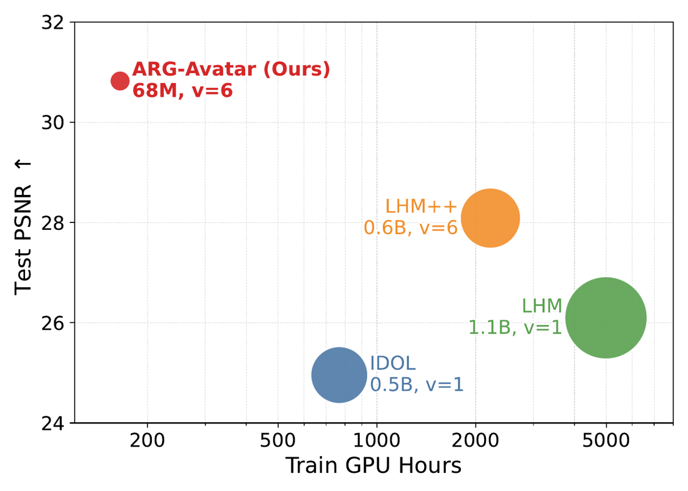

ARG-Avatar
Animation-Rendering Guidance for Efficient Feedforward Avatar Reconstruction
TL;DR
Feedforward avatar reconstruction doesn't need massive scale. ARG-Avatar is a lightweight model trained only on public data that turns a few photos into an animatable 3D avatar in ~2 seconds, outperforming methods that need far more training compute.

Interactive 3D Avatars
Canonical Gaussian avatars reconstructed from six input images of subjects not seen in training. Drag to rotate; pick a subject below.
Pose-Driven Animation
The same avatars driven by novel motion sequences.
4D Gaussian Animation
The full animated Gaussian sequence of one avatar, played back in 3D. Rotate the view while it moves.
DNARendering subject, 112-frame dance loop at 30 fps, 570K Gaussians per frame. For in-browser playback the per-frame Gaussian positions are compressed into a 256-bone skinning fit (median deviation 1 mm from the model output) and animated on the GPU.
Main Results
Novel pose synthesis with V input images. NeuMan is never seen in training; the other datasets use held-out validation subjects.
| Method | V | NeuMan (novel poses) | Multiview Videos* | 3D Scans** | HumanVid | ||||||||
|---|---|---|---|---|---|---|---|---|---|---|---|---|---|
| PSNR↑ | SSIM↑ | LPIPS↓ | PSNR↑ | SSIM↑ | LPIPS↓ | PSNR↑ | SSIM↑ | LPIPS↓ | PSNR↑ | SSIM↑ | LPIPS↓ | ||
| SIGMAN | 1 | 19.62 | 0.957 | 0.066 | 16.52 | 0.944 | 0.076 | 15.27 | 0.908 | 0.112 | 16.17 | 0.862 | 0.162 |
| IDOL | 1 | 24.96 | 0.964 | 0.036 | 23.18 | 0.962 | 0.051 | 21.32 | 0.935 | 0.086 | 20.53 | 0.899 | 0.129 |
| LHM | 1 | 26.10 | 0.968 | 0.028 | 25.30 | 0.965 | 0.041 | 22.81 | 0.940 | 0.078 | 21.23 | 0.906 | 0.111 |
| LHM++ | 1 | 27.71 | 0.970 | 0.023 | 25.34 | 0.966 | 0.039 | 22.31 | 0.939 | 0.078 | 22.03 | 0.910 | 0.104 |
| 2 | 27.97 | 0.971 | 0.022 | 25.31 | 0.966 | 0.038 | 22.42 | 0.939 | 0.075 | 22.35 | 0.911 | 0.101 | |
| 4 | 28.03 | 0.972 | 0.022 | 25.60 | 0.966 | 0.037 | 22.57 | 0.940 | 0.074 | 22.47 | 0.911 | 0.099 | |
| 6 | 28.09 | 0.972 | 0.022 | 25.68 | 0.967 | 0.036 | 22.49 | 0.940 | 0.074 | 22.50 | 0.912 | 0.098 | |
| ARG-Avatar | 1 | 27.02 | 0.966 | 0.024 | 25.86 | 0.962 | 0.034 | 24.09 | 0.937 | 0.058 | 21.64 | 0.897 | 0.100 |
| 2 | 29.17 | 0.971 | 0.019 | 27.53 | 0.965 | 0.027 | 25.64 | 0.941 | 0.046 | 24.57 | 0.912 | 0.076 | |
| 4 | 30.14 | 0.973 | 0.017 | 28.53 | 0.967 | 0.024 | 26.59 | 0.944 | 0.040 | 25.44 | 0.916 | 0.069 | |
| 6 | 30.82 | 0.975 | 0.016 | 28.83 | 0.968 | 0.023 | 26.81 | 0.945 | 0.039 | 25.86 | 0.918 | 0.067 | |
*Multiview Videos combines DNARendering and 4D-Dress. **3D Scans averages 2K2K, THuman2.1 and Human4DiT, evaluated on novel views.
Baselines: SIGMAN, IDOL, LHM and LHM++; poses for all methods are estimated with LHM-Track.